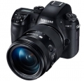

三星公布了NX1的详情规格，新机有多项强劲功能，例如是配上205点相位侦测对焦点、4K解像拍片、H.265编码压缩、15fps高速连拍等，似乎相当强横！新机已于外国网购网站接受预订，定价1,499美元（约合人民币9206 元）。
可怜的，连个点评都没有。 性能在APS机器中绝对处于上游，价格太高，无后续，具体见下。
1、持握感好（和几台A7系比较），这是最强烈的感受； 2、机内4K，并且可以很方便在机内最视频做截图，拍运动的人或者动物具有先天优势； 3、传输方便，无论是和手机连接传照片（WIFI和NFC）还是直接通过无线备份到PC，都比较方便，速度也可以接受； 4、各按钮、快捷方式的接近单反的操控，很多快捷键可以自定义，比如我将转盘定义成和A7S一样的直接调整ISO，很方便； 5、电池耐用，具体我没有测量，但是感觉能拍很多天，都不太需要充电，1900MA的电池还是不错的； 6、配合16-50S镜头防水，已经试过在雨中拍照，感觉很爽； 7、ifuction按键，虽然谈不上是明显的有点，但也算是个特色； 8、对焦迅速，这个只是和A7系比较（7\\7S\\7R2），视频追焦性能优秀； 9、快门声音啊，清脆中有点闷骚，但很动听，比SONY的NEX和A7等卡塔卡塔舒服许多； 10、触摸屏，操作、对焦都方便，想想连wifi时输入密码，比非触屏的相机轻松多了； 11、放大功能适用，画质损失在可以接受的范围。
1、太贵，八千多啊！全幅的价格了！（15年买的行货带票价格，现在已经降价了） 2、高感，呵呵，手里有A7S，对其高感自然不会满意，但基本上ISO1600是可用的，3200也凑合； 3、镜头少啊，这个是整个NX系统的问题； 4、拍视频啊，液晶屏为啥不整个A99那样的多角度啊； 5、独立的信息显示屏（单反的感觉）确实看着舒服，但是没怎么用过，有点摆设；